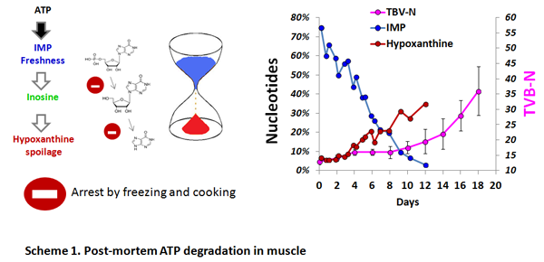
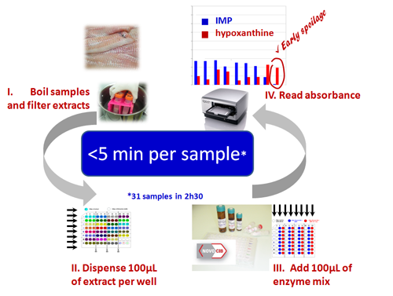

Wide application range : Download: |
||||||||||||||||

Background: The content of ATP is particularly high in muscle where ATP is used for contraction. As soon as an animal dies, cell respiration stops as well as ATP formation. Post-mortem ATP degradation leads to rapid formation of IMP (5-24h), Inosine (days) and Hypoxanthine (weeks). The formation of IMP and inosine is mainly due to autolytic reactions, whereas hypoxanthine is a result of both autolytic and microbial degradation. The utilisation of nucleotides as freshness indicators were first suggested by pioneer works of Japanese scientists in the late 1950's (Saito et al.1958) and was further confirmed by numerous scentific articles. In difference to TVB-N or TMA widely used to detect biochemical changes that appear at a medium- or a late-stage of spoilage, nucleotides provide the tools to detect very beginning of spoilage process(Scheme 1).

Simple and fast procedure:
The kit is developed in "add-and mesure" format is easy to use. The convinient 96-well format allows simultaneous quantification of IMP, inosine and hypoxanthine in 31 samples in 2h30 using "PRECICE® K (IMP) Assay Kit".
